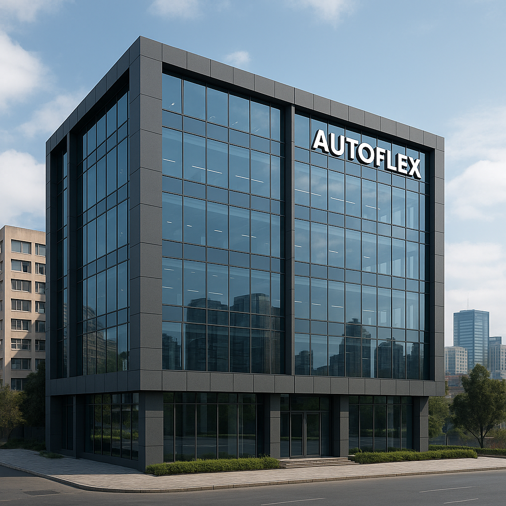

Head Office of AutoFlex
Addis Ababa,Bole

About
Hey, this is Gelila, the CEO of AutoFlex — your
car-loving guide here to help you find the perfect ride that truly fits you.
But before that, let me share the love I have for cars…
The love I have for cars began at a young
age—watching them glide through streets with power,
elegance, and freedom sparked something in me. That passion grew over the years
into a deep curiosity about how cars work, what makes them unique, and how they
connect people to the life they want. From that passion, AutoFlex was born—not just as a business,
but as a bridge between people and the vehicles that move their dreams forward. Whether it's selling, renting,
or offering cars on credit, AutoFlex is built on the belief that everyone deserves a ride they can trust. We’re
not just offering services—we’re driving stories.
History of AutoFlex
The story of AutoFlex began in 2010, sparked by a deep passion for automobiles and a vision to redefine car ownership in Ethiopia. What started as a small, ambitious venture in Addis Ababa quickly grew into a trusted brand known for reliability and customer care. From day one, our mission was to break down the barriers that made it difficult for many people to own or access quality vehicles — whether through buying, renting, or financing options tailored to their needs. Over the past decade, AutoFlex has steadily expanded its footprint across the country. Today, we proudly operate five branches in Ethiopia’s key cities: Addis Ababa, Bahir Dar, Mekelle, Hawassa, and Dire Dawa. Each branch serves as a hub where our dedicated team connects with local communities, offering personalized services, expert advice, and a wide variety of vehicles to suit different lifestyles and budgets. Our growth reflects not only our commitment to quality but also the trust and loyalty of thousands of customers who have chosen AutoFlex as their go-to automotive partner. As the company continues to evolve, we remain focused on innovation and excellence, driven by the same love for cars that inspired our founders. At AutoFlex, we believe that every journey starts with the right ride — and we are proud to be part of those journeys, helping people move forward with confidence and pride.
Types Of Cars WE Provide
| Brand | Model | Key Features |
|---|---|---|
| Mercedes-Benz | S-Class | Massage Seats, Ambient Lighting, MBUX AI System, Adaptive Cruise Control |
| BMW | 7 Series | Gesture Control, Panoramic Sky Lounge, Bowers & Wilkins Audio |
| Audi | A8 | Quattro AWD, Virtual Cockpit, Night Vision Assist |
| Tesla | Model S Plaid | Autopilot, 0-60 in 2s, 17" Touchscreen, Over-the-Air Updates |
| Rolls-Royce | Phantom | Handcrafted Interior, Starry Headliner, Ultimate Silence Cabin |
| Lexus | LS 500 | Mark Levinson Audio, Executive Rear Seat, Predictive Suspension |
Branch Location
- BahrDar

- Mekele

- Jimma